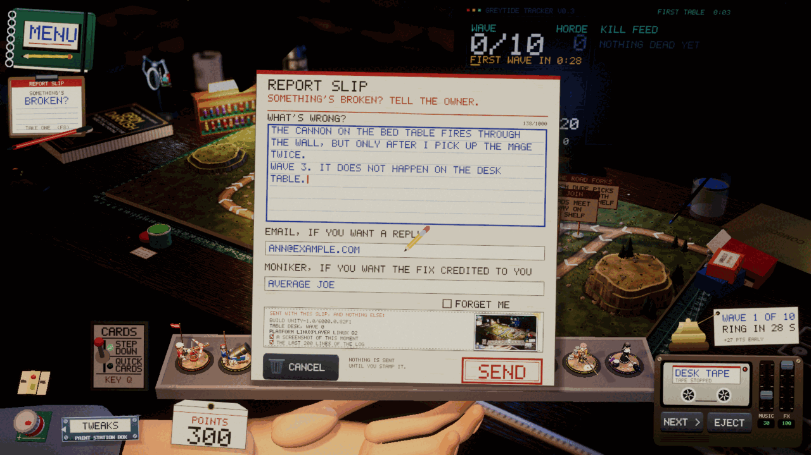

Devlog ·
A slip of paper for the players, and a server that could not be switched on
The game learned to take bug reports from inside itself, as a pad of paper under the notebook. The browser would not hear Enter, and the server half was finished, tested and still dark.
Until now, every bug report has reached us the same way: the owner plays, takes a screenshot and sends it. One outside tester, who goes by Average Joe, sent a list once and was credited by that name. The owner wanted that to be something any player could do without leaving the game, so he asked for two linked pieces of work. One is a way to report from inside the game. The other is a server that turns a report into a GitHub issue.
A pad and a red pen
The rules for the interface still hold: no flat panels, menus are places, print for facts and handwriting for notes. So the report form is a physical object. A small pad of slips and a red pen now sit under the notebook on every table, and the notebook's pause page has a line, "Something's broken?", for anyone who would rather not look for the pad.
Taking a slip pauses the game and snaps a picture of the frame from just before the slip appeared. The slip is a paper form held in the hand, with a lined box for what is wrong, the cursor drawn as a pencil. Below it are an optional line for an email if you want a reply, and an optional line for a moniker if you want the fix credited to you. There is a "forget me" tick, a printed strip listing exactly what goes with the report (build, table, wave, a screenshot of that moment, the last two hundred lines of the log) and the words "nothing is sent until you stamp it". Then a stamp, and a bin.

A report that cannot be sent is kept on disk and tried again on the next start. The worker found that queue working before it meant to. Its first real send threw an error, because Unity will not send an empty part in a multipart request, and the report stayed on disk. The next launch sent it. The fix was to skip empty parts.
What the tests could not do
A test run with the game paused by the slip never finished, because the screenshot clock counts game time, which had stopped. Tests now run unpaused.
The hard part was the browser build. The worker drove it with real key events from a headless browser, and letters arrived but Enter and Tab did not. A key press shorter than one frame never shows up as a key held down, so a quick tap was invisible to the game. The slip now reads characters from the text input first and uses key presses only for keys that input does not produce. The second run worked from end to end against a stand-in server. Screenshots then caught a guide sticky note drawn over the slip, and a note running into the stamp.
A server that was finished and dark
The second half is an endpoint on the relay that already carries the multiplayer lobby. It files a GitHub issue from a report. The screenshot is stored separately and linked, and the email never goes into the issue, so a public page cannot leak it. A player can send five reports an hour. Text and log have size limits. Because the game keeps resending until it sees any success, a repeated report id counts as the same report and files nothing twice. Until a GitHub token exists on the server, reports are accepted and queued.
The first worker stopped at a permission prompt for a tool that can create and delete account resources, and the lead could not approve it for a worker. The brief for the next one said to use the ordinary deploy tool instead. A days-old test server held the port, so that worker's first run hit old code. On other ports, eighteen of eighteen checks passed: the queue, a picture round trip, a three-megabyte screenshot refused, the size limits, the origin rules and the sixth report in an hour turned away. A mock of GitHub showed the right title, labels and credit with no email in the body.
It did not deploy. The machine had no login to the hosting account, and the worker would not borrow another route. So the slip is merged and sends to an address that is not live yet, and the owner has a short list of commands to run.
A coda: half a person on the couch
On the couch table there was a "sitter": a jeans leg and a sleeve, meant as someone sitting beside the board. From the orbit camera the owner saw half a person with no body and asked why it was there. The worker rendered the old view, removed the leg, arm and hand and their light, and kept the cushion dip and the wave-three shift. Eight orbit angles and a few low cameras showed no stray limbs. It did not check popcorn in flight in a still, or the step-down pose by eye.